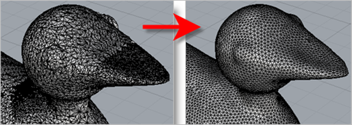
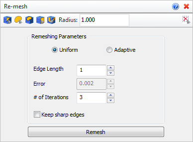

Use this command to perform an isotropic re-mesh your model using a Uniform or Adaptive method. Additional parameters are available from the Browser. The Uniform method performs a re-mesh based on a uniform Edge Length. The Adaptive method performs a re-mesh only in areas where the number of encountered errors exceed a given threshold. You can also re-mesh only a selected number of facets using the Facet Selection Toolbar provided. Auto Fix is performed automatically after this command.
|
The following options and reference information is available:  Mesh model prior to Remeshing
|
|
Before mesh(es) are selected: After mesh(es) are selected: |
The following options and reference information is available. The parameters values shown here were used in the Re-Mesh Example below.  Re-mesh Options
|
|